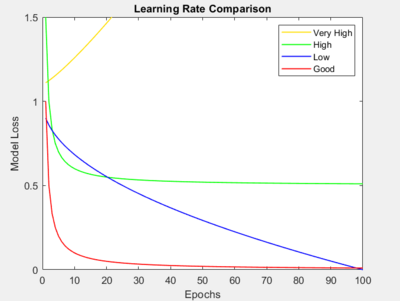

Anndlda
Purpose
Predictions based on Artificial Deep Learning Neural Network (ANNDLDA) classification models. ANNDLDA Artificial Neural Network for classification. Use ANNDL for Artificial Deep Learning Neural Network regression (Anndl).
Synopsis
- anndlda - Launches an Analysis window with ANNDLDA as the selected method.
- [model] = annddal(x,y,options);
- [pred] = anndlda(x,model,options);
- [valid] = anndlda(x,y,model,options);
Please note that the recommended way to build and apply an ANNDLDA model from the command line is to use the Model Object. Please see this wiki page on building and applying models using the Model Object.
Description
Build an ANNDLDA model from input X and Y block data using the specified number of layers and layer nodes. Alternatively, if a model is passed in ANNDLDA makes a Y prediction for an input test X block. The ANNDLDA model contains quantities (weights etc) calculated from the calibration data. When a model structure is passed in to ANNDLDA then these weights do not need to be calculated.
There are two options of ANNDLDA available:'sklearn' and 'tensorflow'.
- The 'sklearn' implementation is a Multi-layer Perceptron that uses backpropagation training. See https://scikit-learn.org/stable/modules/generated/sklearn.neural_network.MLPRegressor.html for further details.
- The 'tensorflow' implementation is a feedforward ANNDLDA that provides a variety of hidden layer types, including Convolutional layers for CNNs. See https://www.tensorflow.org/api_docs/python/tf/keras/Sequential for further details.
'sklearn' is the ANNDLDA version used by default but the user can specify the option 'algorithm' = 'tensorflow' to use Tensorflow instead. The Scikit-Learn implementation is fast. Tensorflow is slower in comparison, but provides more customization when building the network architecture. Comparisons between ANNDLDA implementations and ANNDA are discussed in further detail below.
Note: The PLS_Toolbox Python virtual environment must be configured in order to use this method. Find out more here: Python configuration. At this time, one cannot terminate Python methods from building by the conventional CTRL+C. One way to stop ANNDL from building is when cross-validating by closing the Cross-Validation waitbar that appears. Please take this into account and mind the workspace when using this method.
Inputs
- x = X-block (predictor block) class "double" or "dataset", containing numeric values,
- y = Y-block (predicted block) class "double" or "dataset", containing numeric values,
- model = previously generated model (when applying model to new data).
Outputs
- model = a standard model structure model with the following fields (see Standard Model Structure):
- modeltype: 'ANNDLDA',
- datasource: structure array with information about input data,
- date: date of creation,
- time: time of creation,
- info: additional model information,
- pred: 2 element cell array with
- model predictions for each input block (when options.blockdetail='normal' x-block predictions are not saved and this will be an empty array)
- detail: sub-structure with additional model details and results.
- pred a structure, similar to model for the new data.
Calculation of Class Probabilities
The raw predictions from the ANN model are values ideally close to zero or one. A value closer to zero indicates the new sample is NOT in the modeled class; a value of one indicates a sample is in the modeled class. The distribution of the calibration sample predictions are modeled as Gaussians and used to provide a probability of the sample being in each class based on the raw prediction values. Please see this description of converting raw ANN outputs into class probabilities. The raw prediction values are in model.pred{2} and the classification probabilities are in model.detail.classification and model.detail.cvclassification.
Training Termination
The ANNDLDA is trained on a calibration dataset to minimize prediction error, RMSEC. It is important to not overtrain, however, so some criteria for ending training are needed.
Sklearn's max_iter parameter is the maximum number of iterations for weight optimization. However, this number may not be reached for a couple of reasons. One reason being that the sklearn early stopping has been enabled. This means is that the sklearn method automatically sets 10% of the calibration data aside as validation data and optimization will stop if the validation score is not improving by n_iter_no_change (hard set to 10) or tol (this is a adjustable parameter in PLS_Toolbox). Accuracy can be increased on the calibration set by decreasing tol, but this leads to overfitting when cross-validating or predicting on the validation set.
Tensorflow training termination follows the same convention as the sklearn implementation, just under the software's respective parameter names. Termination will occur whenever either options.tf.epochs is reached or the rate of improvement does not exceed options.tf.min_delta after 20 epochs. Note these RMSE values refer to the internal preprocessed and scaled y values.
Cross-validation
Cross-validation can be applied to ANNDLDA when using either the ANNDLDA Analysis window or the command line. From the Analysis window specify the cross-validation method in the usual way (clicking on the model icon's red check-mark, or the "Choose Cross-Validation" link in the flowchart). In the cross-validation window the "Maximum Number of Nodes" specifies how many nodes in the first hidden layer (nhid1) to test over. Viewing RMSECV versus number of nhid1 nodes (toolbar icon to left of Scores Plot) is useful for choosing the number of layer 1 nodes. From the command line use the crossval method to add crossvalidation information to an existing model. Since these networks generally require large node sizes (unlike ANN), cross-validation is not done on every possible value from 1:nhid1 as this would take some time. Instead, we have implemented a rule as to what node sizes for nhid1 to test over should be. Here's the cross-validation rule that is set in place:
Note: nhid1 is the node size of the first hidden layer
- If nhid1 <= 10, cross-validation looping is done over [1:nhid1]
- e.g. Let nhid1 = 8, nhid1 looping array will be [1:8]
- If nhid1 > 10 and nhid1 <= 100, cross-validation looping is done over [1 2 3 5 mod(nhid1,25) nhid1] (this array contains each value where mod(nhid1,25) is 0)
- e.g. Let nhid1 = 95, nhid1 looping array will be [1 2 3 5 25 50 75 95]
- If nhid1 > 100, looping is done over [10 20 30 50 100 mod(nhid1,100) nhid1] (this array contains each value where mod(nhid1,100) is 0)
- e.g. Let nhid1 = 250, nhid1 looping array will be [10 20 30 50 100 200 250]
Again, this is to avoid doing cross-validation over every possible value in 1:nhid1.
Starting in 9.1, one has more control in specifying the nodes to cross-validate over using the cvskip option. Adjusting this parameter will control the step size in cross-validation over the number of nodes in the first hidden layer. Empty is the default, so it will incorporate the rule above in determining what nodes to cross-validate over. Otherwise, an integer can be passed to specify the increment between nodes to cross-validate over.
- e.g. Let nhid1 = 100. If cvskip is empty, it'll default to the rule above so nhid1 looping array will be [1 2 3 5 25 50 75 100]. Let cvskip be 10. Then the nhid1 looping array will be [1 10 20 30 40 50 60 70 80 90 100].
Options
options = a structure array with the following fields:
- display : [ 'off' |{'on'}], Governs display
- plots: [ {'none'} | 'final' ], Governs plotting of results.
- blockdetails : [ {'standard'} | 'all' ], Extent of detail included in model. 'standard' keeps only y-block, 'all' keeps both x- and y- blocks.
- waitbar : [ 'off' |{'auto'}| 'on' ], Governs use of waitbar during analysis. 'auto' shows waitbar if delay will likely be longer than a reasonable waiting period.
- warnings : [{'off'} | 'on'], Silence or display any potential Python warnings. Only visible in the MATLAB command window.
- algorithm : [{'sklearn'} | 'tensorflow'], ANNDLDA implementation to use.
- preprocessing: {[] []}, Preprocessing structures for x and y blocks (see PREPROCESS).
- compression: [{'none'}| 'pca' | 'pls' ], Type of data compression to perform on the x-block prior to calculating or applying the ANNDLDA model. 'pca' uses a simple PCA model to compress the information. 'pls' uses a pls model. Compression can make the ANNDLDA more stable and less prone to overfitting.
- compressncomp: [1], Number of latent variables (or principal components to include in the compression model).
- compressmd: [{'yes'} | 'no'], Use Mahalnobis Distance corrected.
- cvi : M element vector with integer elements allowing user defined subsets. (cvi) is a vector with the same number of elements as x has rows i.e., length(cvi) = size(x,1). Each cvi(i) is defined as:
- cvi(i) = -2 the sample is always in the test set.
- cvi(i) = -1 the sample is always in the calibration set,
- cvi(i) = 0 the sample is always never used, and
- cvi(i) = 1,2,3... defines each test subset.
- cvskip : [{[]}] Control the step size in cross-validation over the number of nodes in the first hidden layer. Empty is the default, so it will incorporate a 'smart rule' in determining what nodes to cross-validate over. More on this here. Otherwise, an integer can be passed to specify the increment between nodes to cross-validate over.
- sk : structure representing the input parameters for when algorithm=‘sklearn’
- sk.activation : [ {'relu'} | 'tanh' | 'logistic' | 'identity' ], Type of activation function applied to the weights.
- sk.solver : [ {'adam'} | 'lbfgs' | 'sgd' ], Solver for weight optimization. The lbfgs optimizer is in the famliy of quasi-Newton methods does especially well for smaller datasets and converges faster. The sgd solver does traditional stochastic gradient descent. The adam solver is another flavor of stochastic gradient descent and does well on large datasets in terms of speed and score.
- sk.alpha : [ {'1.0000e-04'} ], L2 Penalty parameter.
- sk.max_iter : [ {'200'} ], Maximum number of iterations for weight optimization.
- sk.hidden_layer_sizes : [ {'100'} ], Vector of node sizes. The ith element represents the number of nodes in the ith hidden layer in the network.
- sk.random_state : [ {'1'} ], Random seed number. Set this to a number for reproducibility.
- sk.tol : [ {'1.0000e-04'} ], Tolerance for optimization.
- sk.learning_rate_init : [ {'1.0000e-03'} ], Initial learning rate.
- sk.batch_size : [ {'12'} ], Number of samples in each of the minibatches.
- tf : structure representing the input parameters for when algorithm=‘tensorflow’
- tf.activation : [ {'relu'} | 'tanh' | 'sigmoid' | 'linear' ], Type of activation function applied to the weights.
- tf.optimizer : [{'adam'} | 'adamax' | 'rmsprop' | 'sgd'], Solver for weight optimization. The adam solver is another flavor of stochastic gradient descent and does well on large datasets in terms of speed and score. The adamax optimizer is an extension of adam and is based on the infinity norm. The rmsprop optimizer uses momentum and keeps a moving average of the gradients. The sgd solver does traditional stochastic gradient descent.
- tf.loss : [{'binary_crossentropy'} | 'categorical_crossentropy' | 'poisson'], Choice of loss function to be minimized.
- tf.epochs : [ {'200'} ], Maximum number of iterations for weight optimization.
- tf.hidden_layer : [ {struct('type','Dense','units',100)} ], Cell array of structs, where each struct represents a hidden layer in the network. The struct accepts 3 possible fields: 'type', 'units', and 'size'. These layers are further explained below.
- tf.random_state : [ {'1'} ], Random seed number. Set this to a number for reproducibility.
- tf.min_delta : [ {'1.0000e-04'} ], Tolerance for optimization.
- tf.learning_rate : [ {'1.0000e-03'} ], Initial learning rate.
- tf.batch_size : [ {'12'} ], Number of samples in each of the minibatches.
Additional information on the ‘sklearn’ ANNDLDA
This implementation uses Scikit-Learn's MLPRegressor object. Not every parameter is able to be modified, but most are. This flavor of ANNDL only uses fully connected layer as opposed to Tensorflow.
Build from command-line
Here's an example of building a sklearn ANNDLDA using the sk substructure:
options = anndlda('options');
options.sk.hidden_layer_sizes = {10, 10, 10};
options.sk.activation = 'tanh';
options.sk.solver = 'lbfgs';
model = anndlda(x,y,options);
Build from Analysis Window
Open window. Create layers by clicking the Add Hidden Layer button in the middle of the panel. This creates a new row, where each row corresponds to a hidden layer. Provide a value for the Units column by clicking the box and entering argument. Remove a layer by clicking the checkbox under the Remove column of the corresponding row of that layer.
Additional information on the ‘tensorflow’ ANNDLDA
PLS_Toolbox does not include the full slate that Tensorflow has to offer, but more than enough to get off the ground running to build deep neural networks. Tensorflow offers a wide variety of the types of layers to use, loss functions, optimizers, and activation functions. This chart goes over what has been adapted from Tensorflow thus far:
- Layers (visit here for more info: https://www.tensorflow.org/api_docs/python/tf/keras/layers
- Dense (fully connected layer)
- Flatten (Takes weights from the previous layer and flattens to a 1-dimensional vector)
- Dropout (Randomly assign a fraction of the node values to 0.)
- BatchNormalization (Normalizes weights from the previous layer to have a mean output close to 0 and standard deviation close to 1)
- Conv[123]D (all three dimensions included)
- AveragePooling[123]D (all three dimensions included)
- MaxPooling[123]D (all three dimensions included)
- Optimizers (visit here for more info: https://www.tensorflow.org/api_docs/python/tf/keras/optimizers
- Adam
- Adamax
- RMSProp
- SGD
- Loss functions (visit here for more info: https://www.tensorflow.org/api_docs/python/tf/keras/losses
- Binary Crossentropy
- Categorical Crossentropy
- Poisson
- Activation functions (visit here for more info: https://www.tensorflow.org/api_docs/python/tf/keras/activations
- Relu
- Tanh
- Sigmoid
- Linear
How to use Tensorflow layers
Each of the layers included in PLS_Toolbox are used to do specific tasks, and therefore require different arguments. As noted above, the tf.hidden_layer parameter is a cell array of structs, each struct representing a hidden layer. The supported field names for these layers are the following
- ‘type’
- ‘units’
- ‘size’
Each hidden layer requires the ‘type’ field to be populated by one of the supported hidden layers provided above. This table explains the parameter mapping for the ‘units’ and ‘size’ fields and the corresponding Tensorflow parameter names by layer type:
| Layer Type | Required Field(s) | Tensorflow Parameter(s) | Input data type |
|---|---|---|---|
| Dense | units | units | integer([1,∞)) |
| Flatten | N/A | N/A | N/A |
| Dropout | units | rate | float((0,1]) |
| BatchNormalization | N/A | N/A | N/A |
| Conv1D | units, size | kernels, filter_size | integer([1,∞)), integer([1,∞)) |
| Conv2D | units, size | kernels, filter_size | integer([1,∞)), [x y] (where x,y are integers specifying length and width) |
| Conv3D | units, size | kernels, filter_size | integer([1,∞)), [x y z] (where x,y,z are integers specifying length, width, and height) |
| MaxPooling1D | size | pool_size | integer([1,∞)) |
| MaxPooling2D | size | pool_size | [x y] (where x,y are integers specifying length and width) |
| MaxPooling3D | size | pool_size | [x y z] (where x,y,z are integers specifying length, width, and height) |
| AveragePooling1D | size | pool_size | integer([1,∞)) |
| AveragePooling2D | size | pool_size | [x y] (where x,y are integers specifying length and width) |
| AveragePooling3D | size | pool_size | [x y z] (where x,y,z are integers specifying length, width, and height) |
Build from command-line
With keeping the information from the above table in mind, here's an example of an ANNDLDA using 4 hidden layers. The following example network consists of 3 fully-connected hidden layers and then uses a dropout layer to randomly set 25% of the nodes to 0.
options = anndlda('options');
options.algorithm = 'tensorflow';
options.tf.hidden_layer{1} = struct('type','Dense','units',64);
options.tf.hidden_layer{2} = struct('type','Dense','units',32);
options.tf.hidden_layer{3} = struct('type','Dense','units',16);
options.tf.hidden_layer{4} = struct('type','Dropout','units',0.25);
model = anndlda(x,y,options);
Here's an example of how to build a 2-dimensional Convolutional ANNDLDA model:
options = anndlda('options');
options.algorithm = 'tensorflow';
options.tf.hidden_layer{1} = struct('type','Conv2D','units',64, 'size', [3 3]);
options.tf.hidden_layer{2} = struct('type','MaxPooling2D','size',[3 3]);
options.tf.hidden_layer{3} = struct('type','Conv2D','units',64, 'size', [3 3]);
options.tf.hidden_layer{4} = struct('type','MaxPooling2D','size',[3 3]);
options.tf.hidden_layer{5} = struct('type','Flatten');
options.tf.hidden_layer{6} = struct('type','Dense','units', 16);
model = anndlda(x,y,options);
Build from Analysis Window
Open windows and switch the Framework to Tensorflow. Create layers by clicking the Add Hidden Layer button in the middle of the panel. This creates a new row, where each row corresponds to a hidden layer. Switch between layer types by clicking on a row's Layer Type dropdown menu. Provide value(s) for the Units column by clicking the box and entering arguments. For the Pool/Kernel Size column, enter arguments that are space separated if applicable (convolutional and pooling layers). Remove a layer by clicking the checkbox under the Remove column of the corresponding row of that layer.
Notes:
- The activation function from the options structure is applied to each of the Dense and Conv1D, Conv2D, and Conv3D layers in 9.0.
- Tensorflow's ‘channel_last’ convention is followed in 9.0. Data must be arranged in this manner in order to build CNN's
Training Epochs vs. Loss Plot
The scikit-learn and tensorflow network solvers/optimizers gives the model loss at each given training epoch (with the exception of the 'lbfgs' solver in scikit-learn). This plot can give helpful insight on how to tune the learning rate, batch size, and the number of training epochs. This plot can be accessed in both ANNDL and ANNDLDA by the Scores plot in the Analysis toolbar for both of these methods  . Below shows and describes cases where these parameters can be tuned to get more desirable results. For further reading on this topic, be sure to check out this Course Lecture on Epochs vs. Loss Plots
. Below shows and describes cases where these parameters can be tuned to get more desirable results. For further reading on this topic, be sure to check out this Course Lecture on Epochs vs. Loss Plots
Optimizing parameters with Training Epochs vs. Loss Plot:
- Learning Rate
- One can tune their learning rate by examining the shape and direction of the loss curve. As shown in the diagram, a curve like the one in red tells us that our learning rate is tuned enough as this is the ideal curve we are looking for - one where the loss drops significantly after a few epochs and asymptotically approaches 0. The other curves highlight particular cases where the learning rate needs to be tuned, where the corresponding label to that curve in the legend suggests how to tune your learning rate. Follow this diagram to tune your learning rate accordingly.
.
- Batch Size
- In an ideal calibration, we want this curve looking as smooth as possible. Reducing the amount of noise in the loss can lead to more consistent and reliable results. If you see a plot like this, where the loss contains a significant number of spikes:
then increasing the batch size is known to fix this issue:
Increase the batch size as you see fit until you reach a curve that resembles the one above.
- Training Epochs
- If one sees that the number of epochs in the plot is nearly equal to the specified maximum number of epochs and the loss does not improve, one can decrease the number of epochs to receive faster and nearly identical results.
ANNDL and ANN
The two neural network Python implementations have similarities and differences with our ANN implementation. ANNDL offers the ability to build more than 2 hidden layers unlike ANN. This can help in contexts where a more complex network architecture is needed for complex datasets. The node sizes in these neural networks should also be treated differently. In ANN it is advised to keep these node sizes small and to avoid using a second hidden layer, if possible. After testing by some of our staff, we have found that the Python neural networks in ANNDL do well when the node sizes are much larger than that of ANN. Not only can these ANNDL models perform comparably well with ANN but the speed when changing node sizes scales very well, unlike ANN. Another advantage (and disadvantage) is the breadth of parameters to tinker with. While it is nice to have more of a variety options to choose from, building the perfect Python neural network can be time-consuming. In ANN not as many parameters need to be modified and the resulting model is a smaller, robust architecture.
Usage from ANNDLDA Analysis window
The window for ANNDLDA is more involved than ANN's window. Switching between implementations is possible from the panel. There are a few bedrock parameters underneath the implementation selection. Then there is the Hidden Layer Table. This table is recommended to modify the hidden layers, rather than using the Options Window. The use of this table fairly straighforward: add layers by clicking the Add Hidden Layer Button and fill out the necessary information. This comes pretty natural with the Scikit-Learn ANNDLDA. If using Tensorflow, see the Additional Information for Tensorflow Implementation section. X-Block compression is also made available from the panel. Provide the method of compression from the menu selection, and provide the amount of components to reduce to.
When using the ANNDLDA Analysis window, like in the ANN Analysis window, it is possible to specify a scan over a range of hidden layer nodes to use in the first hidden layer. This is enabled by setting the “Maximum number of Nodes” value in the cross-validation window. This causes ANNDLDA models to be built for the range of hidden layer nodes up to the specified number and the resulting RMSECV plotted versus the number of nodes is shown by clicking on the “Plot cross-validation results” plot icon in the ANNDLDA Analysis window’s toolbar. This can be useful for deciding how many nodes to use in the first hidden layer. While cross-validating over a range of node sizes in the first hidden layer, the sizes in the remaining hidden layers stay fixed. Note that this plot is only advisory. The resulting model is built with the input parameter number of nodes, ‘nhid’, and its model.detail.rmsecv value relates to this number of nodes.
See Also
anndl, python, analysis, crossval, preprocess, EVRIModel_Objects